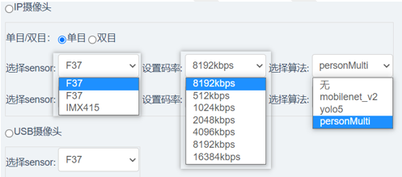

3.2.11. Sunrise_camera用户使用说明
3.2.11.1. 功能说明
Sunrise_camera支持演示X3M、X3E芯片图像模块(VIN、ISP、VPS、VO)、多媒体模块(VENC、VDEC)、BPU模块的Hapi接口功能。
目前支持 IP摄像头（IPC）， USB摄像头（USB Camera），智能盒子（Video Box）等三种示例场景，每种场景支持Web端在线切换，无需重启应用。用户可以通过Web端、VLC拉流、HDMI输出、USB输出等多种方式预览图像效果。此外，通过Web端“场景设置”页面，还可以配置各场景使用的sensor、码率、算法模型等参数。
算法模型支持：mobilenet_v2、yolov5、personMultitask（地平线自研人体多任务模型，支持人脸、人头、人体、人体骨骼点检测）。
3.2.11.2. 硬件环境准备
sunrise_camera程序需要搭配地平线X3 SDB开发板运行，需要确认设备是否齐全，清单如下：
X3 SDB开发板
镜头模组，800W：imx415，200W：F37
12V电源适配器
串口线
网线
micro USB线
整体连接方式见下图：
Sensor连接
对于imx415模组，需要接入mipi host1
对于F37模组，需要接入mipi host0
摄像头fpc排线安装时，主板和sensor金手指朝下进行连接
fpc排线规格：24 pin、0.5mm间距异面fpc，长度<15cm
camera实物连接方式，请参考下图：
网络连接要求
为保证4K编码推流时的稳定性，建议开发板与PC机的千兆网口进行直连。
USB连接要求
X3 SDB开发板分时支持USB host和device模式，4组USB type A支持host模式，1组Micro USB支持device模式，两种接口硬件互斥，不可同时插入设备。当运行USB摄像头方案时，USB线需要接入Micro USB口，开发板Micro USB接口兼容USB2.0、USB3.0两种线缆，如下图：
USB2.0 连接线
需要注意的是，如果需要测试YUV 1080p以上格式，需要使用USB3.0线缆，否则会因usb带宽问题出现丢帧。其余图像格式，USB2.0即可满足要求。此外，市面上存在充电线和数据线两种USB线缆，使用前一定要确认USB线缆是数据线。
3.2.11.3. sunrise_camera部署方法
sunrise_camera软件部署包命名为sunrise_camera.tar.gz，预编译好的部署包存放在sample目录下。建议解压到 /app 目录下，解压生成的文件包括：sunrise_camera主程序目录、WebServer 目录（httpd服务程序和网页目录）、start_app.sh 启动脚本，详细目录结构说明如下：
.
├── start_app.sh # 启动脚本，按顺序启动web服务、主程序
├── sunrise_camera
│ ├── bin # 主程序和sensor库
│ ├── include # 通用头文件（备用）
│ ├── lib # 编译生成的静态库和 bpu predict动态库
│ ├── model_zoom # 应用中用到的算法模型
│ └── test_data # 应用默认配置文件和测试文件
└── WebServer
├── fcgi # fcgi程序（备用）
├── lighttpd-x3 # httpd和web页面
├── pcre # lighttpd依赖
├── README.txt # fcgi、lighttpd、pcre编译部署说明
└── start_lighttpd.sh # web服务启动脚本
程序启动方式
手动启动：
ssh登录设备后，进入 /app 目录，执行 sh ./start_app.sh启动
上电自启动：
修改文件系统读写属性，命令如下：
mount -o rw,remount /
修改/init.rc文件添加自启动项，如下图：
3.2.11.4. Web端使用说明
主界面
Sunrise camera正常启动后，通过chrome浏览器在地址栏输入IP地址（开发板默认IP为192.168.1.10）可以登录用户控制主界面， 例如：http://192.168.1.10
登录成功后的界面显示如下：
界面菜单详细说明如下：
| 1 | 设备信息，点击后会显示芯片类型、rtsp拉流url和软件版本号 |
|---|---|
| 2 | 场景配置，点击后打开场景选择和参数配置页面 |
| 3 | 显示当前运行的场景信息 |
| 4 | 在运行地平线PersonMulti算法时显示，可以配置预览画面中渲染内容，包括人脸、人头、人体和骨骼 |
| 5 | 运行时动态切换编码码率 |
| 6 | 浏览器预览画面的实时帧率 |
| 7 | 算法运算的实时帧率 |
参数配置方式
sunrise_camera支持通过Web端在线修改参考场景、camera类型、编码效果及算法模型等参数配置，修改界面如下图：
具体修改步骤如下：
启动sunrise_camera程序，打开chrome浏览器输入设备地址，例如：http://192.168.1.10
点击场景配置按钮，如上图红色标号“1”
选中对应的示例场景，例如上图红色标号“2”
选择开发板实际接入的sensor型号、编码参数、算法模型，例如上图红色标号“3”
点击提交，修改生效但不断电保存。如需生效且断电保存，请点击保存配置。
注意：程序默认场景为智能盒子方案，如保存配置为其他场景，需保证摄像头模组的正确连接，否则会引起程序异常。
设备信息
点击 “设备信息”按钮，可以显示当前芯片类型（X3M、X3E）、rtsp推流信息（支持vlc拉流）、软件版本信息等。
IP摄像头配置
IP摄像头方案实现了camera图像的采集、处理、编码、rtsp推流及智能计算等功能，可以帮助用户快速体验地平线方案的图像和算法效果，方案功能框图如下：

对于Web端的方案参数配置，支持选择单双目Sensor类型选择、编码码率配置及算法模型选择等功能，配置区域如下图所示：

“单目/双目”选项用于确定sensor接入方式。当选择单目时，配置第一行的sensor、码率和算法；当选择双目时，两行选项都必须配置，sensor配置目前只支持8M+2M的组合，例如imx415+F37。
“选择sensor”下拉菜单，首选项是当前默认配置，其余选项是自动探测到接入设备的sensor类型。由于默认sensor可能并未接入，因此必须选择跟设备实际连接sensor型号，否则程序会报错。
“设置码率”下拉菜单，支持设置每一路图像的H264编码码率，注意不能设置为0kpbs；双目方案的第二路流为stream_chn1.h264
“选择算法”下拉菜单，支持设置每一路图像所运行的算法模型。
配置完成后点击“提交”按钮，程序会立即切换场景应用，并输出图像效果。
USB摄像头
USB摄像头方案，实现了camera图像的采集、处理、编码、UVC传输等功能，可以帮助用户快速体验地平线方案的图像。方案功能框图如下：

对于Web端的方案参数配置，只支持单目sensor接入，可通过”选择sensor”下拉菜单，配置需要的sensor类型，并通过主机端相机软件预览效果。由于算法结果的传输、可视化渲染需要采用地平线自定义协议和app，所以第三方播放器只支持图像效果预览。
图像预览目前支持window、安卓平台的多种应用软件，如windows相机、potplayer、uvc camera、腾讯会议、zoom、钉钉等。用户可在软件中连接uvc camera摄像机进行体验。
PC版本potplayer下载链接：https://daumpotplayer.com/download/
Andorid版本uvc camera app下载连接，可在USB摄像头方案状态说明信息下方点击下载链接下载。
智能盒子
智能盒子方案实现了单路、四路1080p视频解码、拼接、编码、rtsp推流及智能计算等功能，用户可通过Web端、HDMI或者拉流方式预览效果。方案功能框图如下：
对于Web端的方案参数配置，支持选择单、四路解码路数选择、编码码率配置及算法模型选择等功能，配置区域如下图所示：

“选择路数”下拉菜单，支持选择1路或者4路本地文件解码；
“设置码率”下拉菜单，支持选择H264编码码率；
“选择算法”下拉菜单，支持选择每路视频流运行的算法模型。
配置完成后点击“提交”按钮立即切换场景应用。
其他配置
算法渲染配置
当运行地平线多任务模型时，Web端默认会出输出人脸、人头、人体、骨骼点等算法可视化渲染效果，用户可以通过“算法渲染配置”，来决定自己需要的算法结果输出。配置界面如下图：
图像实时抓拍
Web端支持图像实时抓拍功能，可以完成实时画面中raw、yuv原图的抓取，用于后续的效果对比和分析。目前只有IPC单目场景支持抓拍功能，当运行该场景时，会在Web左下角控制区显示抓拍按钮，用户可以点击相应按钮完成raw、yuv原图的抓取，如下图：

点击抓拍按钮后会弹出文件保存对话框，用户选择合适路径后，点击保存按钮即可。
预览码流切换
选择IPC双目场景时控制区会显示主、子码流切换下拉框，可以通过选择主、子码流在web上预览不同sensor的画面，如下图：
预览画面属性显示
Web端预览画面支持图像帧率和算法帧率的实时显示，帧率显示位于画面右上角。
Web端预览画面支持显示当前设备时间。
3.2.11.5. vlc播放器拉流
sunrise_camera程序运行时会推送rtsp流，用户可以通过vlc播放器拉流，实现画面预览和保存功能。
拉流方法
打开vlc播放器，选择“媒体”菜单，然后选择“打开网络串流”选项。
在“打开媒体”对话框中填入url地址，点击 “播放”按钮即可开始拉流，如下图：
url地址可以在web页面的设备信息中查看。
4K@30fps拉流配置说明
1、 4K@30fps 8Mbps的情况下网络必须是千兆网络，否则支持不了8Mbps的码率，很容易出现马赛克和花屏情况。
2、vlc buffer_size设置，vlc 接收buffer修改：默认是250000，建议改到1200000。
3、使用http模式，可以有效解决拉流丢帧导致的花屏。
4、高级设置里面禁用时钟同步